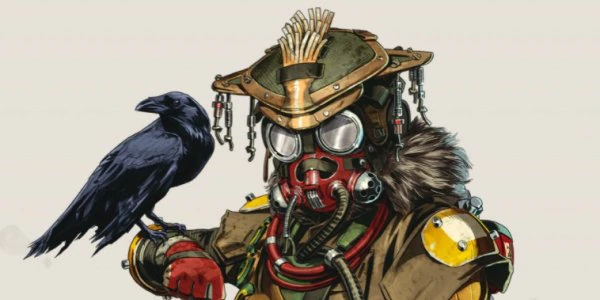
ブラットハウンド
能力
トラッカー- 敵が残した痕跡を見つけることができる。
全能の目- 短い間だけ眼前の全構造物を見通して、敵や罠、手がかりを見破る。
ハンティングビースト- 究極のハンターに変身する。五感が研ぎ澄まされることでかすかな痕跡を認識できるようになり、さらに動きも速くなる。ノックダウンによって効果時間が延長される。
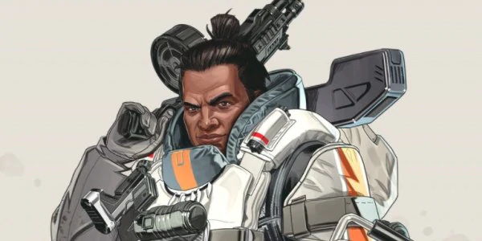
ジブラルタル
能力
ガンシールド- 照準器越しにエイムを行うとガンシールドが展開し、被弾を防ぐ。
プロテクトドーム- 内側と外側の両方の攻撃をブロックする。
防衛爆撃- スモークでマーキングした地点に迫撃砲の集中攻撃を要請する。
ライフライン
能力
戦闘復帰- 照準器越しにエイムを行うとガンシールドが展開し、被弾を防ぐ。
D.O.C.ヒールドローン- 慈愛ドローン(Drone of Compassion)が一定時間、付近の兵士を自動的に治療する。
ケアパッケージ- 高品質の防御用装備を積んだドロップポッドを要請する。
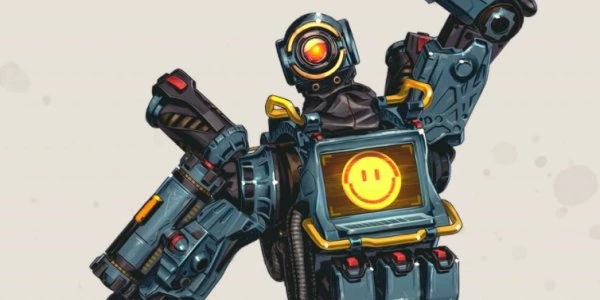
パスファインダー
能力
内部情報- 調査ビーコンをスキャンするたびに、ジップラインガンのクールダウン時間が10秒減少する(120秒→80秒)。ジップラインガンが即座に使用可能になる。
グラップリングフック- グラップリングで、移動の難しい場所へ素早く移動できる。
ジップラインガン- 誰もが使用できるジップラインを作り出す。
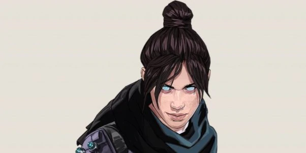
レイス
能力
虚空からの声- 危機が迫ると謎の声が語りかけてくる。判断の及ぶ限りでは、こちらの味方をしているようだ。
虚空へ- 虚空を通り、安全かつ迅速に移動する。ダメージは一切受けない。
ディメンションリフト- 2地点間をポータルで60秒間連結する。
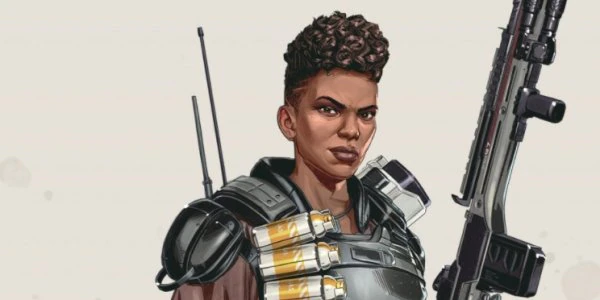
バンガロール
能力
駆け足- スプリント中に被弾すると、移動速度が短時間向上する。
スモークランチャー- 発煙缶を高速射出し、着弾時の爆発で煙の壁を作り出す。
ローリングサンダー- 一帯をゆっくりと巡る支援砲撃を要請する。
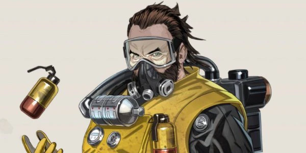
コースティック
能力
NOXガスビジョン- ガスの中を移動する敵を強調表示する。
NOXガストラップ- 強力なNoxガスを放つ容器を最大6つ配置する。射撃か敵の接近によって起動する。
NOXガスグレネード- 広いエリアをNoxガスで包む。
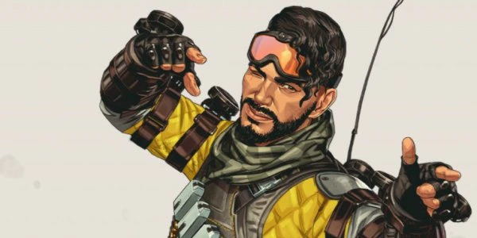
ミラージュ
能力
神出鬼没- リスポーンビーコン使用時やチームメイトの復活時間に、自動でクロークが発動する。
サイクアウト- ホログラフのデコイを発生させて、敵を混乱させる。デコイはキーで操作できる。
パーティライフ- ミラージュが操作可能なデコイ集団を展開して敵の注意を引く。
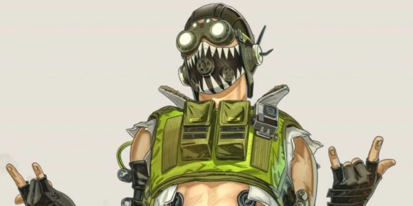
オクタン
能力
高速修復- ダメージを受けていない間、体力が少しずつ回復する。
興奮剤- 6秒間、歩行速度が30％、スプリント速度が40％上昇する。体力を消費して使用。発動中は速度低下は軽減する。
ジャンプパッド- 上に乗った者を空中へ射出するジャンプパッドを展開する。空中でキーを押すとダブルジャンプできる。
ワットソン
能力
天才のひらめき- アルティメット促進剤でアルティメットがフルチャージされる。ワットソンは他のレジェンドより多く促進剤を携行できる。また、シールドが少しずつ回復する。
周辺セキュリティ- ノードを繋いで電気フェンスを作る。フェンスは敵にダメージを与えて移動速度を低下させる。
インターセプターパイロン- 飛んでくる軍需品を破壊し、シールドの損傷を修復する電気パイロンを設置する(最大数：3)。ワットソンはパイロンの近くにいると戦術アビリティのリチャージ速度が上昇する。
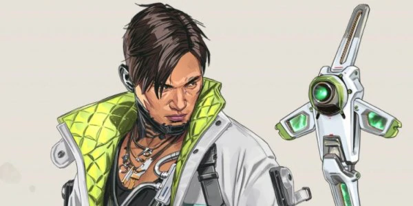
クリプト
能力
ニューロリンク- クリプトとチームメイトは、スパイドローンが30m以内で検知したものを確認できる。
スパイドローン- 空中カメラ付きドローンを展開する。破壊されると40秒のクールダウンが必要。
ドローンEMP- ドローンからEMPをチャージする。衝撃波によって50シールドダメージを与え、プレイヤーの動きを遅らせつつ、罠を破壊する。
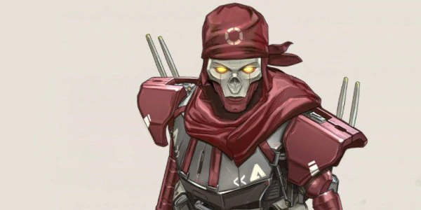
レヴナント
能力
ストーカー- しゃがんだ状態での移動が速くなり、より高い壁を登ることができる。
サイレンス- 敵にダメージを与え、20秒間敵のアビリティを無効にするデバイスを投げる。
デストーテム- プレイヤーを死から保護するトーテムを設置する。キルやダウンを回避するかわりに、トーテムに引き戻される。また、デスプロテクションが発動中はアーマーが無効になる。
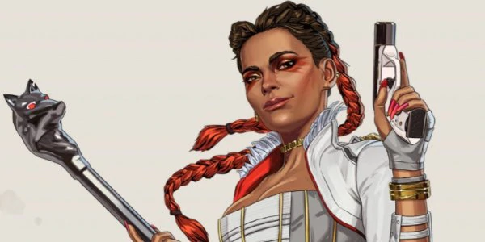
ローバ
能力
アイフォークオリティ- 付近のスーパーレアとレジェンダリーのアイテムを壁越しに見ることができる。距離はブラックマーケットと同じ。
盗賊の相棒- ジャンプドライブ・ブレスレットを投げ、たどり着きづらい場所にテレポートしたり、窮地から一瞬で脱する。
ブラックマーケット- 付近のアイテムをインベントリ内にテレポートさせられるポータブルデバイスを配置する。敵味方を問わず、各レジェンドは最大2個のアイテムを回収できる。
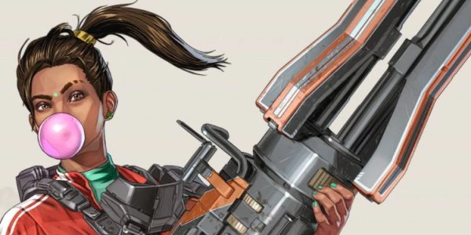
ランパート
能力
改造ローダー- LMGやミニガン使用時に装弾数が増加し、高速なリロードが可能。
増幅バリケード- 遮蔽物を設置すると、全体を覆う増幅バリケードが出現する。外側からの銃弾をブロックし、バリケード内からの攻撃を強化する(最大数：5)。
ミニガン「シーラ」- 全員が使用できる銃架付きマシンガンを設置する。大量の装弾が可能だが、リロードに時間を要する(最大数：3)。
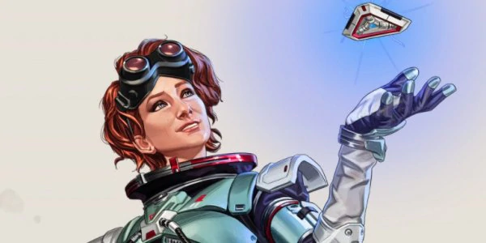
ホライゾン
能力
スペースウォーク- ホライゾン独自の宇宙服で空中制御を向上させて、落下の衝撃を抑制する。
グラビティリフト- 重力の流れを逆転させてプレイヤーを上に持ち上げ、脱出時にブーストをかける。
ブラックホール- ニュートを展開して、プレイヤーを引き寄せる極小のブラックホールを発生させる。
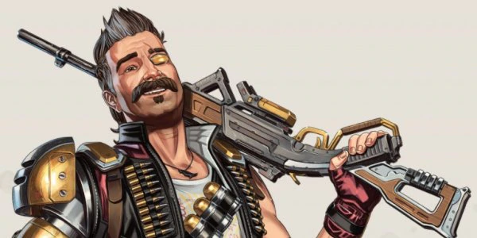
ヒューズ
能力
グレネーダー- インベントリの各スロットでグレネードを1個多く所有できる。グレネードを遠くへ、素早く、正確に放てるようになる。
ナックルクラスター- 着弾時に空中炸裂式の爆発物を連続射出するクラスター爆弾を発射する。
マザーロード- 一帯を炎の壁で包み込む爆撃を行う。
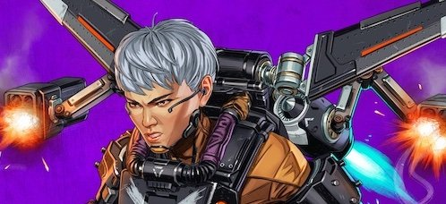
ヴァルキリー
能力
VTOLジェット- 一時的に空中に浮遊し飛行可能。燃料がなくなるまで持続できる。燃料は約8秒経過すると再チャージされる。
ミサイルスワーム- 複数のミサイルを発射し、敵に25〜50のダメージを与える。アークスターと同じようなスロウ効果がある。
スカイワードダイブ- 発動すると発射準備モードを経て素早く空高く飛び上がり、頂点に達するとジャンプタワーのように飛行する。飛行中は敵が強調表示される。味方も一緒に飛び上がることも可能。